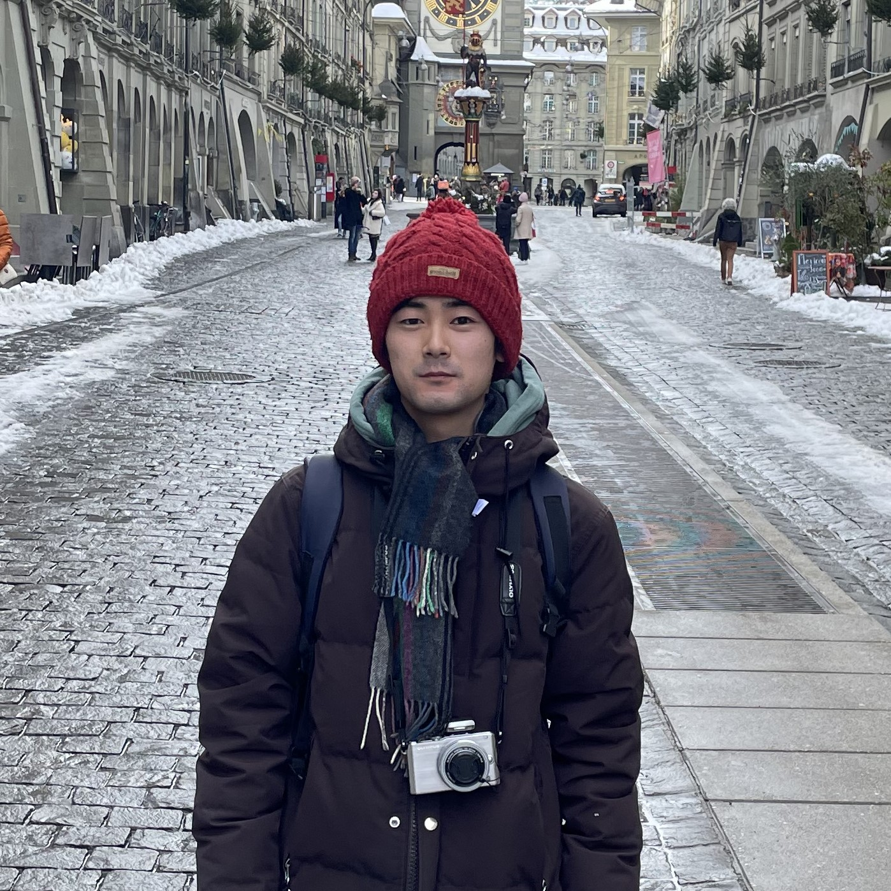

CONDENSED MATTER PHYSICS
塩谷 太基
東京大学 物性研究所 助教
Institute for Solid State Physics, The University of Tokyo
量子材料の新物質探索、結晶育成、磁気・電子・構造物性を研究しています。
RESEARCH TOPICS
Crystal growth
Frustration
Itinerant-electron magnetism
Structural physics
Nuclear magnetic resonance
News
2026.04
東京大学物性研究所（ISSP）に助教として着任しました。